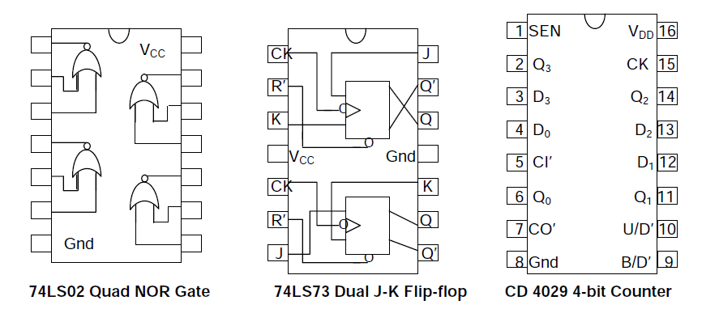

Counters
Usually, counter circuits are digital in nature, and count in natural binary. Many types of counter circuits are available as digital building blocks, for example a number of chips in the 4000 series implement different counters. Occasionally there are advantages to using a counting sequence other than the natural binary sequence such as the binary coded decimal counter, a linear feedback shift register counter, or a Gray-code counter. Counters are useful for digital clocks and timers, and in oven timers, VCR clocks, etc. The counters will be assembled using two 74LS73 dual J-K flip-flop chips and a 74LS02 quad NOR chip. Note that each flip-flop has an asynchronous Reset (R’) input besides the synchronous J-K inputs. This enables one to reset any of the flip-flops by making R’ = 0 irrespective of the status of the clock (CK) input. The asynchronous R’ input will be utilised in this experiment to initialise the flip-flop outputs as well as to obtain counters having cycle length N is less than 16.
Pin connections:
Basic Counter (Binary Ripple Counter)
1.. Make J = K = 1 for all the flip-flops, thereby converting the J-K flip-flops to T flip-flops. Connect all R’ inputs together to an Input Switch, and the outputs Q0,Q1,Q2,Q3 to four LED Displays.
2. Set up an Up-counting Binary Ripple Counter by making clock connections as follows: CK0 = Manual Clock (CLK-M), CK1 = Q0, CK2 = Q1, CK3 = Q2.
3. Using the Input Switch connected to the common R’ input, initialise the counter to the stat
4. Apply Manual Clock pulses and tabulate the state sequence for the entire cycle.
5. Now change the clock input connections to CK1 = Q0’, CK2 = Q1’, CK3 = Q2’, to obtain a Down-counting Binary Ripple counter.
Asynchronous (ripple) counter:
An asynchronous (ripple) counter is a single JK-type flip-flop, with its J (data) input fed from its own inverted output. This circuit can store one bit, and hence can count from zero to one before it overflows (starts over from 0). This counter will increment once for every clock cycle and takes two clock cycles to overflow, so every cycle it will alternate between a transition from 0 to 1 and a transition from 1 to 0. Notice that this creates a new clock with a 50% duty cycle at exactly half the frequency of the input clock. If this output is then used as the clock signal for a similarly arranged D flip-flop (remembering to invert the output to the input), you will get another 1 bit counter that counts half as fast. Putting them together yields a two-bit counter:
| Cycle | Q1 | Q2 | (Q1:Q0)dec |
|---|---|---|---|
| 0 | 0 | 0 | 0 |
| 1 | 0 | 1 | 1 |
| 2 | 1 | 0 | 2 |
| 3 | 1 | 1 | 3 |
| 4 | 0 | 0 | 0 |
Synchronous counter:
A simple way of implementing the logic for each bit of an ascending counter (which is what is depicted in the image to the right) is for each bit to toggle when all of the less significant bits are at a logic high state. For example, bit 1 toggles when bit 0 is logic high; bit 2 toggles when both bit 1 and bit 0 are logic high; bit 3 toggles when bit 2, bit 1 and bit 0 are all high; and so on. Synchronous counters can also be implemented with hardware finite state machines, which are more complex but allow for smoother, more stable transitions. Hardware-based counters are of this type.
Decade counter:
A decade counter is one that counts in decimal digits, rather than binary. A decade counter may have each digit binary encoded (that is, it may count in binary-coded decimal, as the 7490 integrated circuit did) or other binary encodings (such as the bi-quinary encoding of the 7490 integrated circuit). Alternatively, it may have a "fully decoded" or one-hot output code in which each output goes high in turn (the 4017 is such a circuit). The latter type of circuit finds applications in multiplexers and demultiplexers, or wherever a scanning type of behavior is useful. Similar counters with different numbers of outputs are also common. The decade counter is also known as a mod-counter when it counts to ten (0, 1, 2, 3, 4, 5, 6, 7, 8, 9). A Mod Counter that counts to 64 stops at 63 because 0 counts as a valid digit.
A decade counter has the count sequence 0 → 1 → 2 →.....→ 8 → 9 → 0.., which can be achieved by making R’ = (Q3 •Q1)’ for all the flip-flops in a 4-bit binary counter. This forces the counter to go to the state 0000 as soon as the counter makes the transition from the state 1001 representing count 9 to the next state 1010 according to the normal up counting sequence.
Decade synchronous counter
The logic for the J-K inputs required for a Decade Synchronous Counter is as follows:
J0 = K0 = 1; J1 = Q0•Q3’, K1 = Q0; J2 = K2 = Q0•Q1; J3 = Q0•Q1•Q2, K3 = Q0.
Ring Counter The main difference between a ring counter and a shift resister is that in a ring counter, the output of the last flip-flop is connected to the input of the first flip-flop, but in a shift resister, it is taken as output. ORI is coupled to Preset (PR) in FF-1 and Clear (CLR) in FF-2 and FF-3 for a 3 bit ring counter. As a result, output Q = 1 is generated at FF-1, whereas output Q = 0 is generated by the rest of the flip-flops. Pre-set 1 is the output Q = 1 at FF-1 that is utilised to create the ring counter. Preseted 1 is created by setting ORI to zero and setting the time Clock (CLK) to don't care. After that, the ORI was set to high and a low clock pulse signal was applied as the clock (CLK) was triggered on the negative edge. Following that, the preset 1 is changed to the next flip-flop with each clock pulse, forming a Ring (hence the name Ring Counter) as illustrated in the table below:
| Cycle | Q1 | Q2 | Q3 |
|---|---|---|---|
| 0 | 1 | 0 | 0 |
| 1 | 0 | 1 | 0 |
| 2 | 0 | 0 | 1 |
| 3 | 1 | 0 | 0 |
| 4 | 0 | 1 | 0 |
| 5 | 0 | 0 | 1 |
| 6 | 1 | 0 | 0 |
Multipurpose 4-bit Synchronous Counter
CD4029 is a multipurpose 4-bit counter capable of operating in all the four combinations of Binary/BCD and Up/Down modes, depending on the values of the control inputs B/D’ and U/D’.
In addition, the 4-bit output Q3Q2Q1Q0 of the counter can be preset to any value by applying the desired bits to the direct inputs D3D2D1D0 and making the Set ENable control SEN = 1.